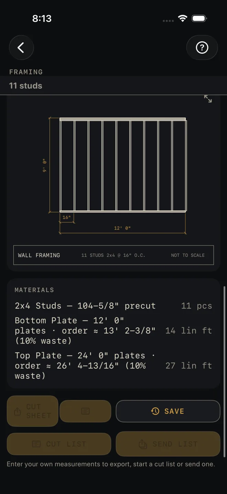
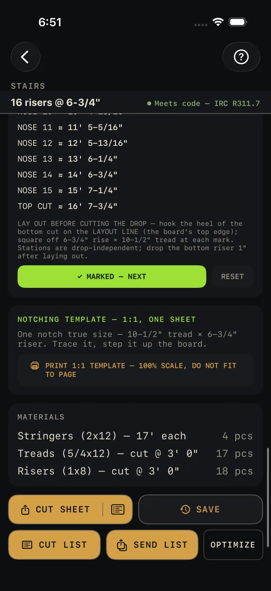
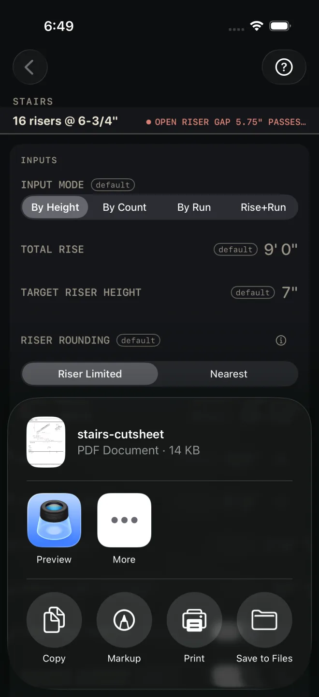
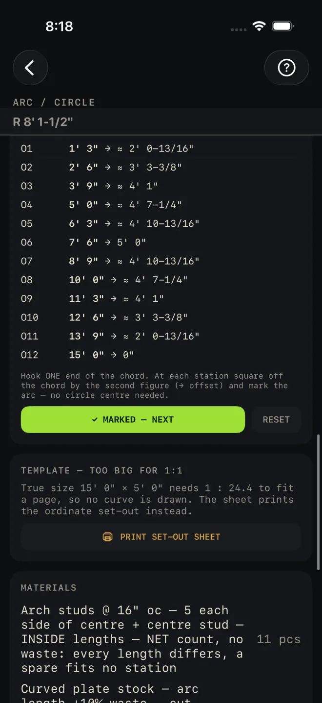

Cut sheets and 1:1 templates
A cut sheet is the calculator's answer on one sheet of paper: the drawing, the numbers you entered, the results and the material list. Hand it to whoever is cutting, text it to the yard, or print it and staple it to the saw stand. Two calculators go further and print a full-size paper pattern you can trace straight onto the stock.
Step by step

1
2 5- Enter your own measurements. A calculator opens with sample numbers so you can see how it works, and while every input is still a sample the export row is dimmed. Under it the screen says "Enter your own measurements to export, start a cut list or send one." Change any input and the row lights up.
- Scroll to the bottom and tap CUT SHEET. On calculators whose sheet has no stock to cut, such as a paint or concrete takeoff, the same button reads SHARE PDF.
- The iPhone share sheet opens with the PDF ready. It is named after the calculator, for example stairs-cutsheet.
- Choose where it goes. Tap Print to send it to a printer, Save to Files to keep it, or pick a person or an app to send it to.
- To send only the shopping list, tap the list icon inside the right end of that same button instead — the small icon past the hairline, on the CUT SHEET pill itself, not a button of its own. It makes a PDF of the material list alone, with no drawings. VoiceOver reads it as "Share material list only". The icon is only there when the calculator has a material list.

3 4What is on the sheet
The sheet is US Letter, black on white whatever the app looks like on screen. Every figure on it is written exactly as the calculator showed it.
- Title block — Housewright Calc, the calculator's name and today's date.
- The drawing — the same one the screen shows. It is still NOT TO SCALE; see Reading the drawing.
- INPUTS — what you entered and the headline results, in a table.
- MATERIALS — the material list with quantities and units. A long list carries on to a page headed MATERIALS (CONT.).
- Detail pages — some calculators add a second drawing on a page of its own. Stairs adds the stringer board with its notch set-out.
- Footer — "Estimate — verify dimensions and local code before cutting/ordering." Sheets from calculators that check code also say which code edition the check used.
The Equal parts and Pythagoras tools on the Dimensional Calculator have the same button. There it reads SHARE PDF.
1:1 templates
A template is a PDF drawn at true size: one inch on the paper is one inch on the work. Stairs prints one notch of the stringer. Arc / Circle prints the curve. The card sits below the mark-out on each screen, and its heading tells you what you will get before you spend the paper.

1 2- Read the card's heading. On Stairs it is NOTCHING TEMPLATE — 1:1, ONE SHEET, the same on a stated number of sheets, or NOTCHING TEMPLATE — TOO TALL FOR 1:1. On Arc / Circle it is TEMPLATE — FITS AT 1:1 or TEMPLATE — TOO BIG FOR 1:1. The line under it gives the true size.
- Tap PRINT 1:1 TEMPLATE — 100% SCALE, DO NOT FIT TO PAGE. The share sheet opens. Tap Print.
- Print at 100%. Turn off any "fit to page" or "scale to fit" setting in the print options. A template that has been shrunk to fit is scrap.
- Check the 1" square printed on the sheet with your tape before you cut anything. If it does not measure one inch, the printer scaled the page. Fix the setting and print again.
- Use it. The stair sheet has the level tread cut along the top and the plumb riser cut down the left, with the layout line, which is the board's top edge, dashed between them. Trace it, then step it up the board. The arc sheet is the curve itself with the chord as its baseline and a tick at each ordinate station. Cut it out and use it as the pattern.
When it will not fit a page
- A tread wider than the page prints across two or more sheets. Trim each on the dashed seam and butt them together. Every sheet is numbered and has its own 1" square.
- A riser taller than the page cannot be joined that way, so no notch is drawn. The button reads PRINT SET-OUT SHEET and the sheet gives the framing-square settings and every running mark instead.
- An arc bigger than the page is not drawn either. The set-out sheet lists every ordinate: snap the chord, measure along it to the station, square off by the offset, and mark.
The app never shrinks a template to make it fit. Angle Tools prints a full-size angle template under the same rule.
If it doesn't work
- The buttons are dimmed and nothing happens. Every input is still the sample value. The line under the row says so. Change any input to your own measurement. This stops a sheet built from sample numbers reaching a job.
- The button has a lock on it. Exporting needs Pro. Tap it to see the upgrade screen.
- There is no list icon in the button. The calculator has no material list for this result, or, on the Cut List Optimizer, the list-only PDF would be the same as the full sheet. The pill is then one plain button with no hairline and no icon at its right end.
- The template is the wrong size. The printer scaled it. Set the scale to 100%, print again and check the 1" square.
- The print button says set-out sheet. The piece is too big for a Letter page at true size. Set it out from the figures on the sheet, or from the mark-out card.